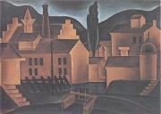

Devětsil (1920-1932)
Umělecký svaz Devětsil sdružoval levicově orientované avantgardní umělce. Jádro utvořili spolužáci z pražských gymnázií v Křemencové ulici a na Žižkově. Prvním předsedou byl spisovatel Vančura, druhým režisér Honzl, hlavní slovo měl programový teoretik Teige. K zakládajícím členům patřil ještě kritik Artuš Černík, malíř Adolf Hoffmeister nebo Seifert. Krátce byl členem Wolker a kritik A.M.Píša. Dalšími členy byli básníci Nezval a Biebl, prozaikové Karel Schulz a Karel Konrád, kritik Bedřich Václavek nebo výtvarníci Josef Šíma, Zdeněk Pešánek, Jindřich Štyrský a Toyen (Marie Čermínová). Sekcí Devětsilu bylo Osvobozené divadlo (E.F.Burian, Jiří Frejka, Voskovec, Werich, Ježek). Původně se členové Devětsilu hlásili k proletářskému umění, ale už roku 1923 se většina nadchla pro poetismus. Název Devětsil objevili mladí umělci v povídkové knize bratří Čapků Krakonošova zahrada. Roku 1923 vznikla brněnská pobočka Devětsilu, která vydávala časopisy Disk a Pásmo. Nejvýznamnějším avantgardním časopisem byl ReD (Revue Devětsil).
Co je devětsil?
Vykořisťují podnikatelé své zaměstnance?
Jak se změnilo postavení dělníků během 20. století?
|
PROLETÁŘSKÁ POEZIE
Řada spisovatelů měla velmi vyvinuté sociální cítění. Snažili se přiblížit chudým lidem i dělníkům a podpořit je v nelehkém postavení alespoň prostřednictvím umělecké tvorby. Umírněnější z nich se hlásili k socialistickým stranám, radikálnější podporovali myšlenky komunismu a očekávali brzký revoluční převrat, jaký proběhl v Rusku. Vládu proletariátu si ovšem velice idealizovali. Například očekávali, že v komunismu bude každý člověk dělat to, co ho baví, a nebude nucen k vydělávání peněz...
Na počátku 20. let 20. století vzniklo v Čechách několik odlišných koncepcí proletářské poezie, tedy poezie se sociální a revoluční tematikou.
Spisovatelé Hora, Neumann, Olbracht a Sova připojili svůj podpis pod provolání Socialistické rady osvětových dělníků, které usilovalo o podporu levicových myšlenek inteligencí.
Programový teoretik Devětsilu Karel Teige chtěl, aby proletářská poezie byla skutečným avantgardním uměním. Navazoval na některé myšlenky unanimismu a propagoval primitivní, lidové a naivní umění. Brzy se ale obrátil k poetismu a konstruktivismu.
Členem Devětsilu byl původně také Jiří Wolker, nejvýraznější postava české proletářské poezie, ale brzy se s touto skupinou názorově rozešel.
Mnozí spisovatelé demonstrovali svou levicovost vstupem do Komunistické strany Československa, která vznikla roku 1921. V roce 1929 se ale v této straně dostalo k moci stalinisticky orientované křídlo v čele s Klementem Gottwaldem. To dospělo k názoru, že se bez idealistických levicových agitátorů obejde, a z komunistické strany bylo vyloučeno sedm známých spisovatelů – Neumann, Hora, Seifert, Vančura, Olbracht, Helena Malířová a Marie Majerová.
Většina tvůrců proletářské poezie si brzy uvědomila, že se o ni zajímá málokdo. Dělníci, kteří museli tvrdě pracovat, rozhodně nechtěli o svém utrpení ještě číst. Raději vyhledávali oddechové a únikové knihy. Avantgardní umělci jim vyšli vstříc novým programem poetismu.

Jan Lauda: Myčka
|
Komunismus
Roku 1917 se v Rusku dostali k moci bolševici v čele s Leninem (1870-1924). Úspěšný komunistický převrat doprovázený důmyslnou propagandou dal novou naději radikálním stoupencům levicových myšlenek. V celém světě začaly vznikat komunistické strany s cílem následovat příkladu Ruska, tedy svrhnout „buržoazní režim“ a nastolit „diktaturu proletariátu“. Ruský revolucionář Trockij (1879-1940) usiloval o celosvětovou revoluci, a proto přišel s myšlenkou vývozu revoluce do dalších zemích. Pokusy o komunistický převrat v ostatních státech byly ale neúspěšné. Největší krizí prošel ideál komunismu po nástupu Stalina (1879-1953) k moci a zahájení čistek a politických procesů ve 30. letech 20. stol.
Otto Gutfreund: Obchod
|
Jiří Wolker (1900-1924)

Wolker se narodil v Prostějově, kde také zemřel. Pocházel z bohaté rodiny bankovního ředitele. Krátce byl členem brněnské Literární skupiny a Devětsilu. Hlásil se k marxismu a komunismu. Napsal manifest Proletářské umění, básnické sbírky Host do domu (Svatý Kopeček) a Těžká hodina, několik pohádek (O milionáři, který ukradl slunce), próz a dramat. Zemřel velmi mladý na tuberkulózu.

Svatý Kopeček u Olomouce
Jiří Wolker: Epitaf
Zde leží Jiří Wolker, básník, jenž miloval svět /
a pro spravedlnost jeho šel se bít. /
Dřív než moh srdce k boji vytasit, /
zemřel, mlád dvacet čtyři let.
Co je epitaf?
Proti dezinterpretaci Wolkerova díla a jeho přeceňování se ohradili autoři manifestu Dosti Wolkera!. Co si o něm myslíš?
|
Jiří Wolker: Proletářské umění
V manifestu Proletářské umění (1922) požadoval básník Jiří Wolker, aby spisovatelé vyznávali revolučnost, kolektivismus, tendenčnost a optimismus.
Jiří Wolker: Host do domu
Wolkerovu prvotinu Host do domu tvoří tři části – Chlapec, Ukřižované srdce a Host do domu. Básník nachází poezii v obyčejných věcech, tematizuje vlastní dospívání a rovněž si všímá sociálních problémů. Pro většinu básní je typická tendence k harmonizaci skutečnosti.
Jiří Wolker: Svatý Kopeček
Apollinairovo Pásmo inspirovalo Wolkera k napsání básně Svatý Kopeček. Tato skladba bývá zařazována do sbírky Host do domu jako její čtvrtá část. Wolkerovi rodiče v tomto místě nedaleko Olomouce vlastnili vilu, ve které děti trávily prázdniny.
Jiří Wolker: Těžká hodina
Sbírka Těžká hodina začíná stejnojmennou básní o proměně chlapce v muže. Hlavním tématem knihy jsou sociální problémy – Balada o nenarozeném dítěti nebo Balada o očích topičových. Celou sbírku uzavírá báseň Moře, která těží z Wolkerova pobytu v Jugoslávii.
|
Co si Wolker představoval pod pojmy revolučnost, kolektivismus, tendenčnost a optimismus?
Souhlasíš s jeho názory?
Jaké by mělo být umění podle tebe?

František Muzika: Továrna ve Vraném
Jak se ti líbí Wolkerova tvorba?
Které další Wolkerovy básně znáš? Umíš je zarecitovat zpaměti?

Otto Gutfreund: Průmysl
Pokus se zapsat základní děj pásma Svatý Kopeček.

Otto Gutfreund: Muž u selfaktoru
Charakterizuj Wolkerův verš.
O čem je báseň Balada o nenarozeném dítěti?
Co je balada?
Kteří spisovatelé psali balady? Srovnej jejich pojetí této básnické formy.
Kteří autoři se zabývali dospíváním? Líbí se ti jejich knihy?
|
Josef Hora (1891-1945)
Hora se narodil v Dobříni u Roudnice nad Labem a zemřel v Praze. Pracoval jako levicový žurnalista v Rudém právu. Od roku 1934 byl předsedou Obce spisovatelů. Napsal básnické sbírky Strom v květu, Pracující den, Srdce a vřava, Bouřlivé jaro, Itálie, Struny ve větru, Máchovské variace nebo Domov a veršovanou skladbu Jan Houslista.
|
Josef Hora: Pracující den
Josef Hora se ve sbírce Pracující den (1920) a dalších knihách proletářské poezie snažil najít odpovídající umělecký výraz pro revoluční ideály. V proletářské revoluci viděl především naplnění touhy po spravedlnosti a zdůrazňoval její morální stránku. Konečným cílem by měla být harmonie, štěstí jednotlivce a smysluplná práce pro každého. Kolektivismus chápe jako východisko z osamělosti.
|
Co tě zaujalo na básni Dělnická Madona?
Na jakém principu je vystavěna?
|
Stanislav Kostka Neumann
(1875-1947)
Neumann pocházel z Prahy, kde také zemřel. Byl zatčen a odsouzen v procesu s tzv. Omladinou. Ve vězení strávil 14 měsíců. V jeho olšanské vile na Žižkově se scházeli čeští anarchisté. Byl velmi aktivním iniciátorem kulturního a společenského dění. Prošel bouřlivým uměleckým i názorovým vývojem od dekadence a symbolismu přes anarchismus až k proletářské poezii. Po vítězství bolševiků v Rusku se stal nadšeným propagátorem komunismu. Vstoupil do KSČ a svůj přerod demonstroval básnickou sbírkou Rudé zpěvy nebo knihou Francouzská revoluce.
|
S.K.Neumann: Rudé zpěvy
Rudé zpěvy (1923) dokumentují Neumannův odklon od myšlenek anarchismu i od uměleckých zásad vitalismu, naturismu a civilismu. Obsahují tendenční básně, ve kterých se autor vyznává z obdivu ke komunismu, ruské revoluci a Leninovi. Řada básní vyzývá k násilné revoluci, vzpouře a otevřenému třídnímu boji.
|
Levicové časopisy
Neumann vydával levicové časopisy Červen a Proletkult, myšlenky komunismu propagoval také deník Rudé právo nebo časopis Var Zdeňka Nejedlého.
Co si myslíš o básních z Rudých zpěvů?
Jak Neumann využívá křesťanskou symboliku?
Proč se jako komunista uchýlil k náboženským motivům?
Jaký je tvůj názor na revoluce a revolucionáře?
Co si myslíš o komunismu?
|
Jaroslav Seifert (1901-1986)
Seifert se narodil v chudé rodině na Žižkově a zemřel v Praze. Po odchodu z gymnázia se stal levicovým novinářem. Redigoval devětsilské časopisy Disk a Pásmo. V době normalizace měl problémy s cenzurou. Seifert byl bytostným lyrikem. Začínal jako autor proletářské poezie – Město v slzách, Samá láska a poetismu – Na vlnách TSF. Vrcholem jeho milostné lyriky jsou sbírky Jablko z klína a Ruce Venušiny. Tradiční hodnoty zdůrazňuje ve sbírkách Jaro, sbohem, Vějíř Boženy Němcové, Šel malíř chudě do světa nebo Maminka. Jeho tvorbu uzavírají sbírky nostalgických veršů Koncert na ostrově, Morový sloup nebo Býti básníkem a kniha vzpomínek Všecky krásy světa. Roku 1984 obdržel Nobelovu cenu za literaturu.
|
Jaroslav Seifert: Všecky krásy světa
V knize vzpomínek Všecky krásy světa popisuje básník Jaroslav Seifert vlastní umělecké začátky. S nadhledem se dívá i na první pokusy ve stylu proletářské poezie. Jeho přístup dobře vystihuje naivitu a idealismus mladých členů Devětsilu.
Další autoři proletářské poezie a jejich díla
Karel Teige: Novým směrem, Obrazy a předobrazy (články)
Jindřich Hořejší: Hudba na náměstí, Korálový náhrdelník, Den a noc
|

Časopis Disk
Co Seifertovi začalo vadit na vlastní básni Slavný den?
Jaký názor sis vytvořil/a na proletářskou poezii a její autory?
Který spisovatel tě zaujal nejvíce? Proč?
|
Internetové stránky
Halas, Černík, Václavek: Dosti Wolkera!, manifest
Seifert: Samá láska
Exkurze
Muzeum Prostějovska, Prostějov (Wolker)

Gutfreundův autoportrét
|
Doporučená četba
Dílo Jaroslava Seiferta 1, Akropolis, Praha 2001
Dostál, Vladimír: Směr Wolker, Praha 1975
Havlík, Přemysl: Předčasná úmrtí 3, WFC, Praha 2002 (Wolker, Biebl...)
Hlinka, B., Všetečka, J.: Den se mi v rukou přelomil, Jiří Wolker neznámý, Práce, Praha 1990
Hora, J.: Duch stále se rodící, Československý spisovatel, Praha 1981
Jiří Wolker ve vzpomínkách současníků, Melantrich, Praha 1990
Kalista, Zdeněk: Kamarád Wolker, Praha 1933
Mourková, Jarmila: Josef Hora, Melantrich, Praha 1981
Neumann, Stanislav Kostka: Nové zpěvy, Rudé zpěvy, Anti-Gide, Orbis, Praha 1953
Seifert, Jaroslav: Všecky krásy světa, Československý spisovatel, Praha 1992
Soldan, Fedor: Jiří Wolker, Československý spisovatel, Praha 1972
Spisy Jiřího Wolkra (4 svazky)
Svoboda, J.: Generace a program, Studie o programech proletářské poezie, Praha 1971
Ten čas je tu, Výbor z proletářské poezie, Mladá fronta, Praha 1980
Vlašín, Štěpán: Jiří Wolker, Praha 1974
Wolker, Jiří: Básně, Československý spisovatel, Praha 1974
Wolker, J.: Do boje, lásko, leť, Československý spisovatel, Praha 1984
Wolker, Jiří: Dopisy, Dopisy a básně Jiřího Wolkera z roku 1923, Odeon, Praha 1975
Wolker, Jiří: Slunce je veliký básník, SNDK, Praha 1951
Wolkerová, Z.: Jiří Wolker ve vzpomínkách své matky, Praha 1951
|
Vypracuj písemný referát o některé z uvedených knih.
Co si myslíš o výroku „Kdo nebyl do třicítky levičákem, nemá srdce, a kdo jím zůstal i po třicítce, nemá rozum.“?
Co bys dělal/a s milionem korun?

Revue Devětsil
|
|